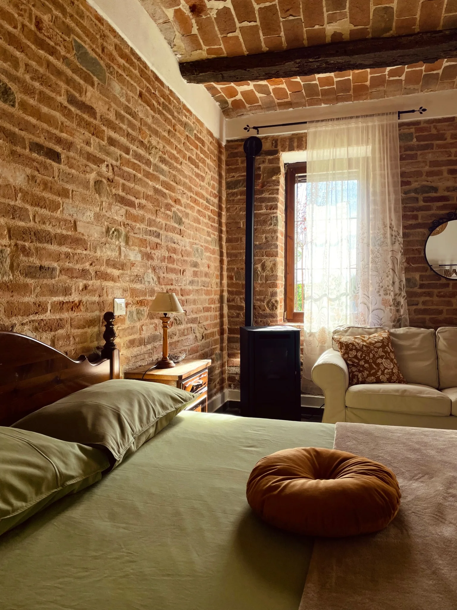
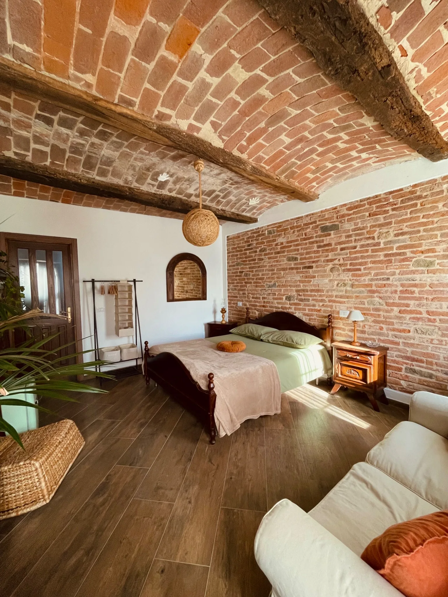
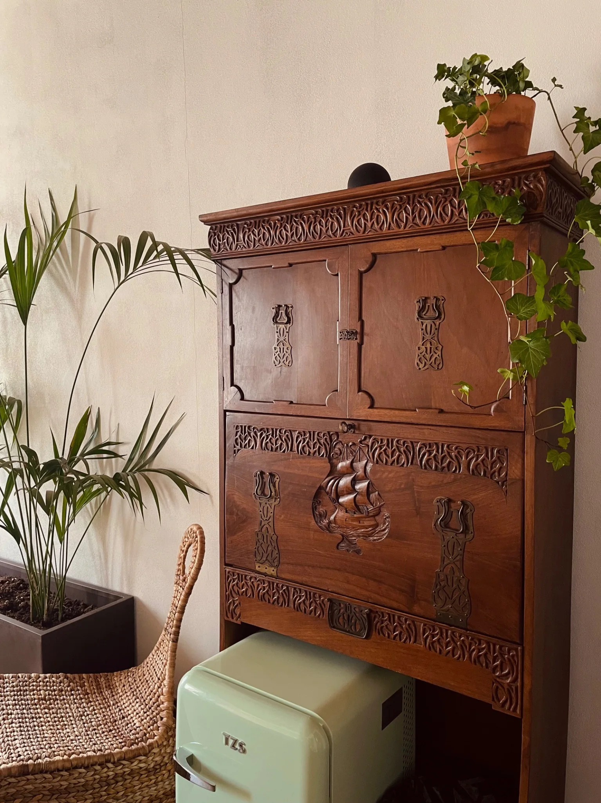
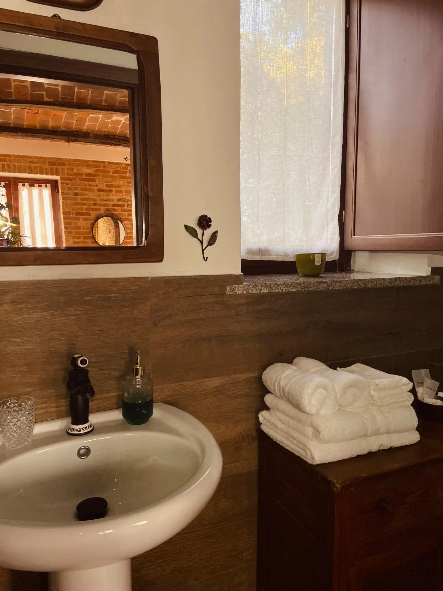

✿Il piccolo rifugio luminoso
La Camera
del Sole
Una stanza indipendente, raccolta e accogliente. Un posto tranquillo dove riposare, leggere o concedersi una pausa tutta propria.
- Fino a 2 ospiti
- Bagno privato
- Angolo ristoro con bollitore e caffè
- Piccolo spazio per meditare e rilassarsi


